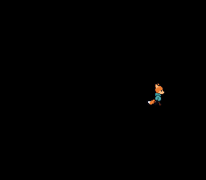

|
OpenSNES
Modern Open-Source SNES Development SDK
|
|
OpenSNES
Modern Open-Source SNES Development SDK
|

How to animate a character sprite that walks in 4 directions with 3 animation frames each. Demonstrates sprite sheet layout, direction state machines, and horizontal flip to reuse art.
Read sprites/simple_sprite first (OAM basics, tile loading).
| Button | Action |
|---|---|
| D-PAD Up | Walk up |
| D-PAD Down | Walk down |
| D-PAD Left | Walk left (flipped) |
| D-PAD Right | Walk right |
Then open animated_sprite.sfc in luna (luna-gui animated_sprite.sfc) or any emulator.
The sprite sheet is a column of fifteen 32x32 frames of Kit seen from above: five walking down, five walking up, five walking to the right. It is loaded to VRAM at startup via oamInitGfxSet(). The converter lays 32x32 blocks out four to a 128-pixel row of OBJ VRAM, so block k starts at tile (k % 4) * 4 + (k / 4) * 64:
Left and right share the same animation row – the PPU's horizontal flip flag (OBJ_FLIPX) mirrors the sprite at zero CPU cost. This is a standard SNES technique that halves the sprite art needed for left/right movement.
One clip per facing, from the anim module; the clip holds the tile numbers and the cadence:
Animation only advances when a direction button is held. ANIM_DELAY (6 frames) controls walking speed – at 60 fps, this means about 10 animation steps per second.
The PPU can flip any sprite horizontally by setting a single bit in the OAM attribute byte. This costs nothing – no extra tiles in VRAM, no CPU work. Many SNES games use this to halve the sprite art needed for left/right movement.
All animation frames are loaded into VRAM at once via oamInitGfxSet(). The active frame is selected by changing the tile number in oamSet(). This means switching frames is instant – just change a number, no DMA needed.
In OAM, a 32x32 sprite uses 16 hardware 8x8 tiles arranged in a 4x4 grid. The tile number refers to the top-left tile; the PPU fills in the rest automatically using the SNES tile numbering convention (right tile = tile+1, each row below is 16 tiles further, the 16-tile-per-row VRAM layout). OBJ_SIZE16_L32 makes "large" mean 32x32, and oamSetSize(0, OBJ_LARGE) picks it for this sprite.
| File | Purpose |
|---|---|
| main.c | Input handling, state machine, animation logic |
| res/kit_walk.png.toml | the import settings of the sprite sheet (opensnes-sprite: 32-pixel blocks, 16 colours); the build converts the PNG and links the result, res/kit_walk.inc declares the symbols |
| res/kit_walk.png | Kit's walk seen from above, 15 frames of 32x32 in a column; generated for OpenSNES, CC0 (assets/neo-lumen/) |
| Makefile | LIB_MODULES := console sprite dma input |
console, sprite, dma, input, anim (LIB_MODULES in the Makefile).